Suturas absorbibles y no absorbibles, mallas para hernia, hemostáticos y accesorios quirúrgicos, distribuidos en Guatemala por iBiomed.
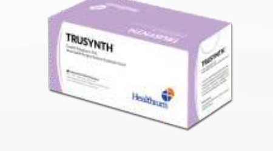
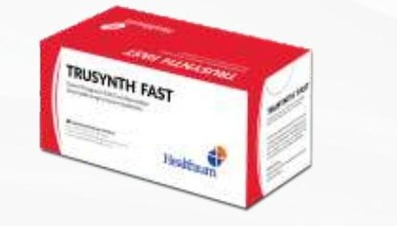
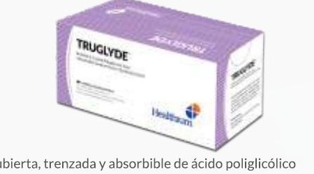
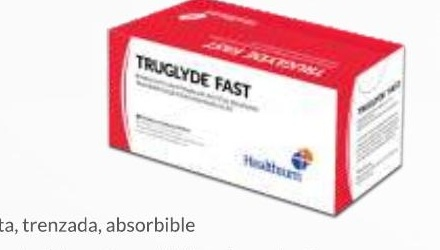
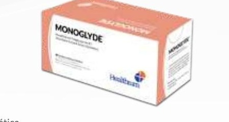
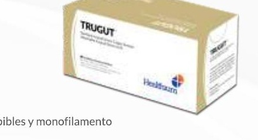
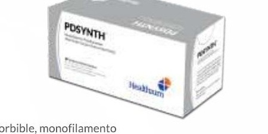
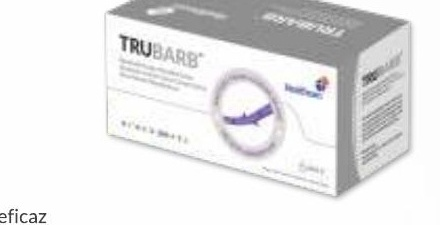
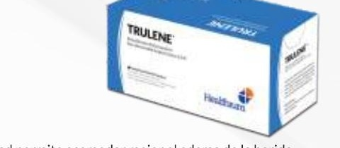
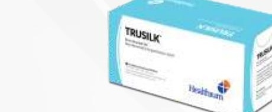
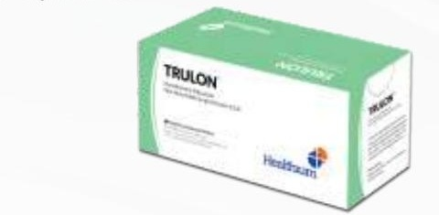
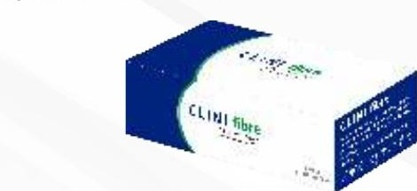
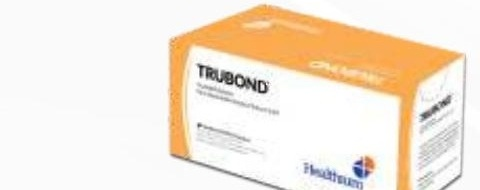
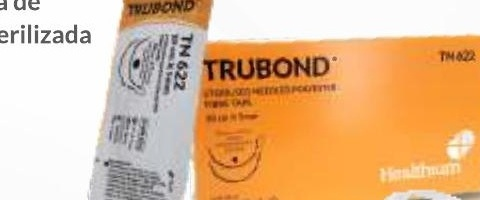
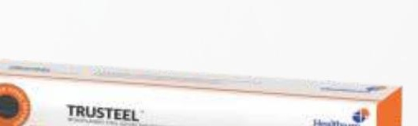
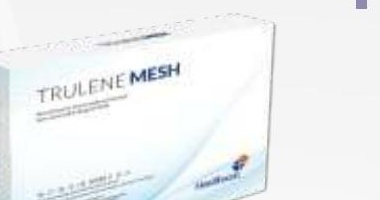
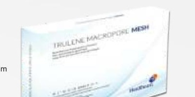
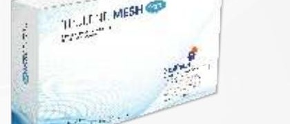
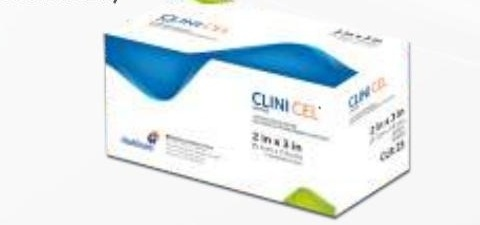
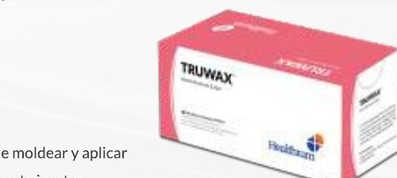
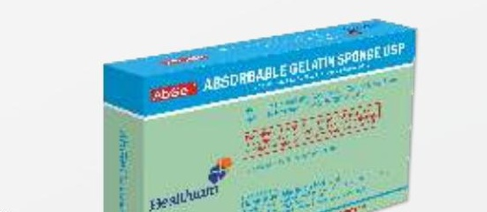
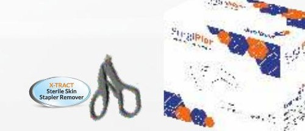
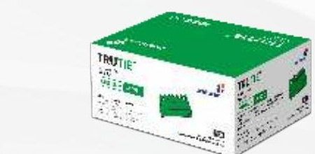
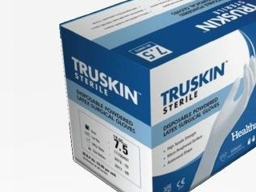
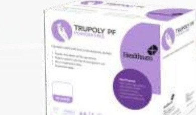
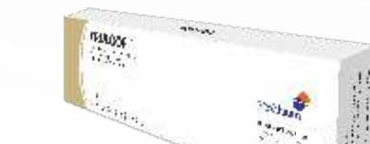
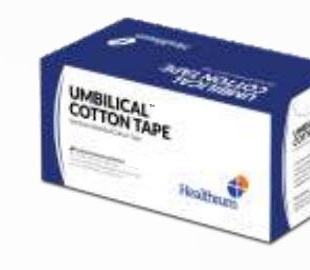
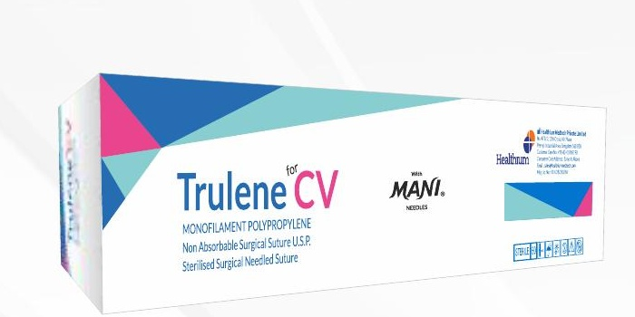
Diseñado para suturas cardiovasculares finas, con el fin de evitar el efecto memoria.
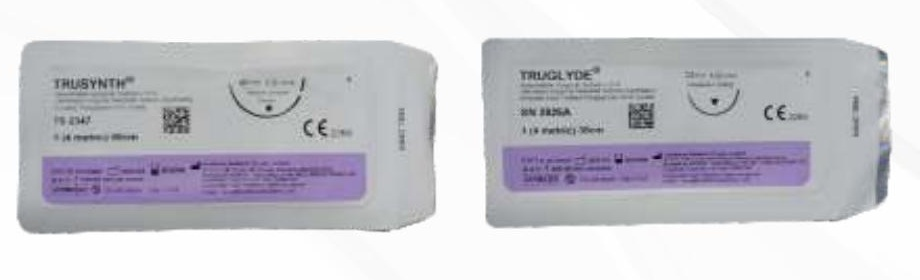
Capacidad de incorporar las directrices exactas de marca del cliente, privadas u OEM.